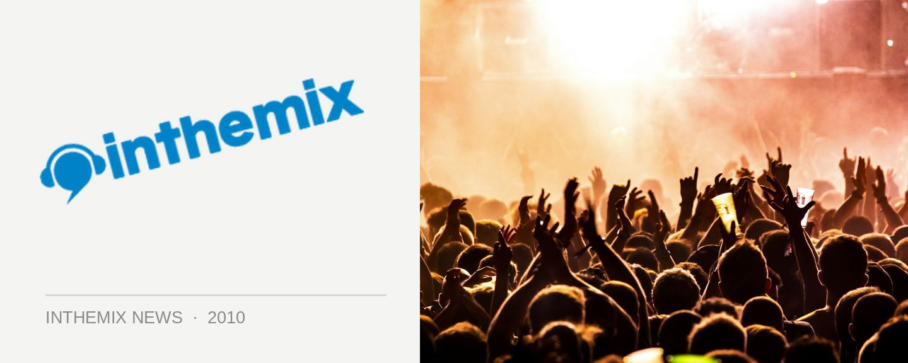

Sensation, Shore Thing, Summanights - ITM's 'best of' NYE galleries!
New Years Eve went off with a bang this year – whether it was the fireworks exploding over the water at Harbour Party in Sydney, or the pyrotechnics lighting up Etihad Stadium in Melbourne when Sensation returned with the spectacular ‘Ocean of White’. However, that was just the tip of the dance music iceberg– the clubs were rammed in Brisbane, the punters flocked to Heaven on Earth in Adelaide, Origin rocked it in Perth and heaps more.
There were more parties than ever before this year to partake of, so what did you get up to? Even if you party hopped like a madman, it would have been impossible to catch it all. Well you’re in luck, because ITM was there to catch all the special moments. Check out our special NYE Snap! gallery roundup…
SYDNEY
> Best of... Harbour Party, Sydney
> Best of... Shore Thing, Sydney
> Best of... Pacha, Sydney
> Best of... Summanights, Sydney
MELBOURNE
> Best of... Sensation, Melbourne - The Crowd
> Best of... Sensation, Melbourne - Production & Artists
> Best of... Pyramid Rock, Victoria - The Crowd
> Best of... Pyramid Rock, Victoria - Production & Artists
BRISBANE
> Best of... The Family NYE, Brisbane
> Best of... The Met NYE, Brisbane
PERTH
> Best of... Derrick Carter + D Ramirez, Perth
ADELAIDE
> Best of... Heaven & Earth, Adelaide
And that’s not all… inthemix.tv was there when the Summadayze brand landed in Sydney for the very first time. Check out our special New Years Eve episode now…